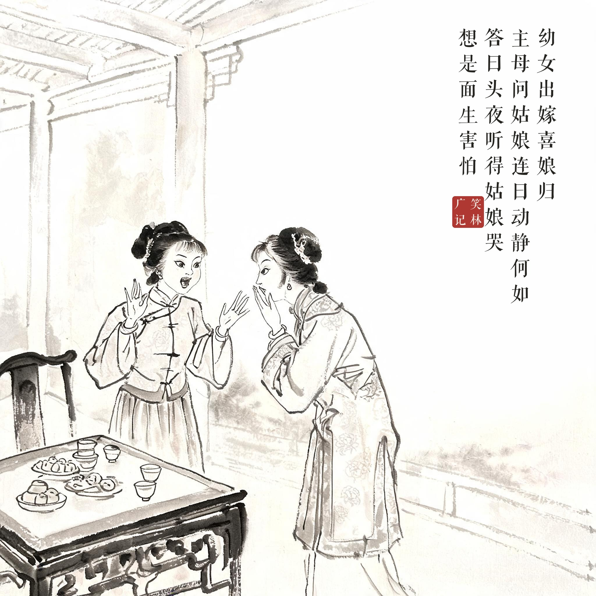
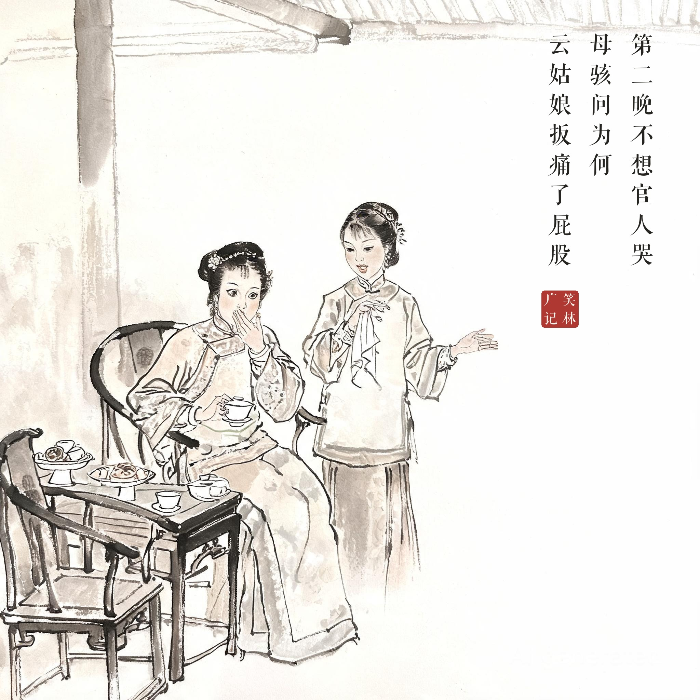
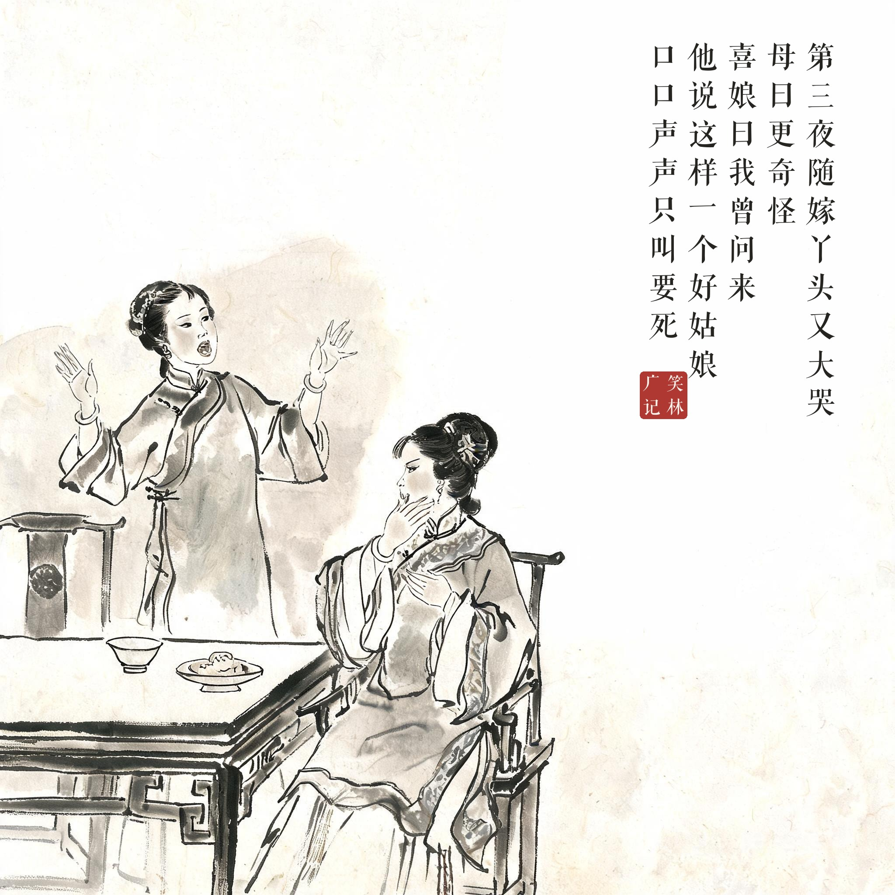

《笑林广记 · 闺风部》（[清]游戏主人纂集）
幼女出嫁，喜娘归。主母问："姑娘连日动静何如？"答曰："头夜听得姑娘哭，想是面生害怕。第二晚不想官人哭。"母骇问："为何？"云："姑娘扳痛了屁股。"第三夜随嫁丫头又大哭。母曰："更奇怪。"喜娘曰："我曾问来，他说这样一个好姑娘，口口声声只叫要死。"
幼女出嫁后，喜娘回门复命。主母问："我闺女这几日动静如何？"喜娘答："头一晚听见姑娘哭，大概是人生地不熟害怕。第二晚没想到姑爷哭了。"母亲惊问："为什么？"喜娘说："姑娘扳痛了他的屁股。第三夜随嫁的丫头又大哭。"母亲说："这就更怪了。"喜娘说："我问过了，丫头说——这么好一位姑娘，口口声声只喊着'要死'。"
三夜哭声层层反转：姑娘哭、姑爷哭、丫头哭——每一段都"另有隐情"，喜娘的现场报道比正剧精彩。